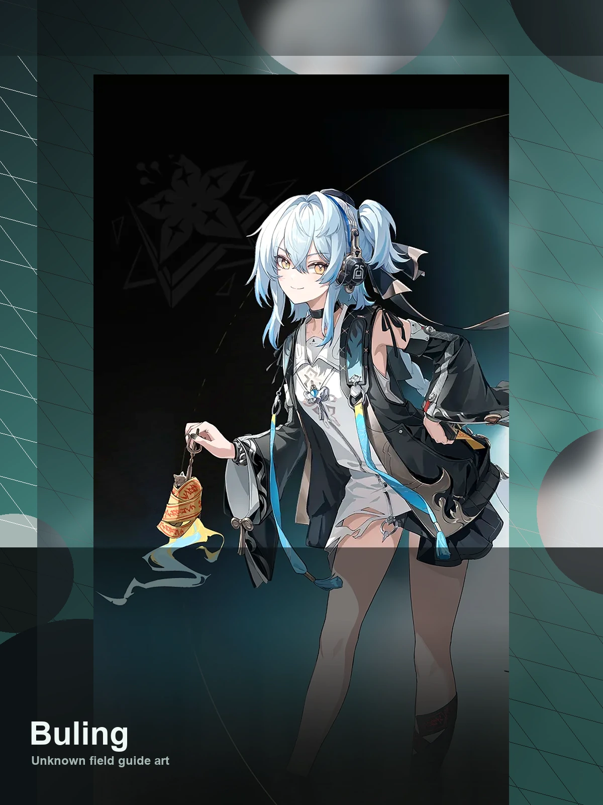

WaveKit
WaveKit

Wuthering Waves Resonator guide
Buling build, teams, weapons, and Echoes
Electro healer/support entry. Good as a sustain option while team-specific testing matures.
ElectroRectifierHealer support5★ ResonatorNeeds current patch review
Quick build
- Role
- Healer support
- Team type
- sustain
- Best weapon
- Stellar Symphony
- Alternate weapons
- Variation / Rectifier#25 / Comet Flare
- Sonata
- Rejuvenating Glow
- Echo cost
- 4-3-3-1-1
- Main Echo
- Fallacy of No Return
- Main stats
- Healing Bonus or ATK% / Energy Regen / ATK%
Stat priority
- Energy Regen until comfortable
- Healing Bonus or kit scaling stat
- HP%, ATK%, or DEF% based on kit
- Comfort substats over perfect damage
Team direction
Buling is best handled by matching their role with the teammates you actually own.
WaveKit treats Buling as flexible. Use the team helper to match them with your owned roster instead of forcing one fixed team.
Useful teammates
No fixed teammate pool is required. Prioritise role coverage, safe sustain, and matching build needs.
Simple play pattern
- Build enough Energy Regen so Buling can heal before panic moments.
- Use support/healing setup first, then leave field time for the damage dealer.
- Prioritise consistency over perfect damage if you are still learning fights.
Build priority
- Difficulty
- Low stress
- Safety
- Real sustain
- Data note
- Needs current patch review
Buling is worth building for account comfort because sustain units make more teams easier to play.